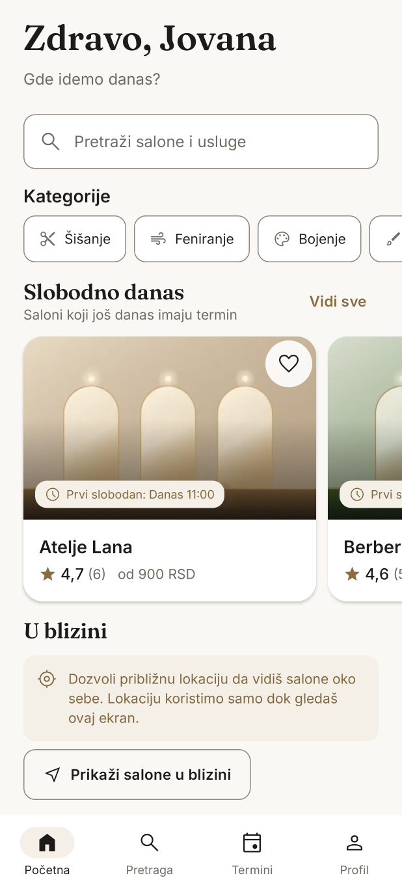
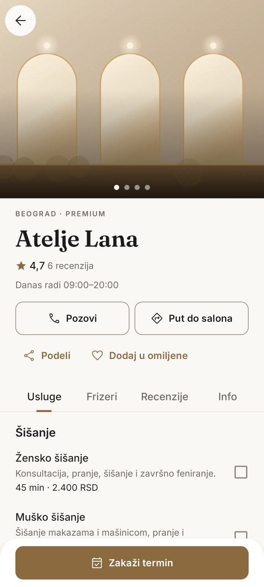
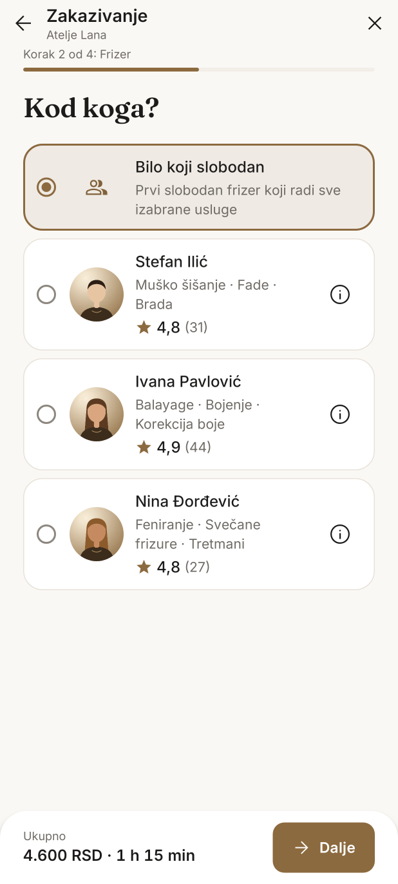
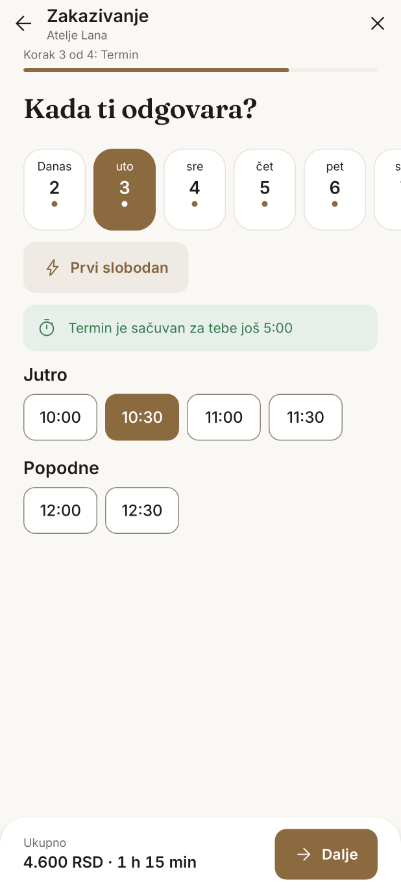
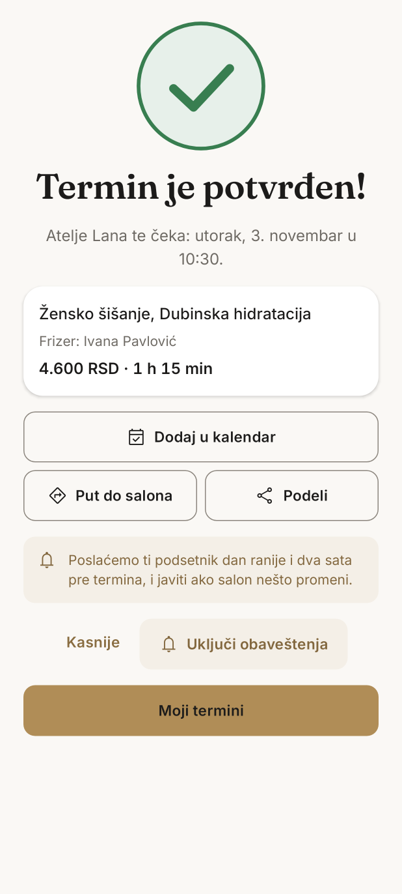
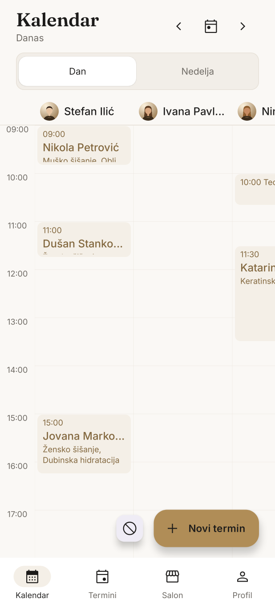
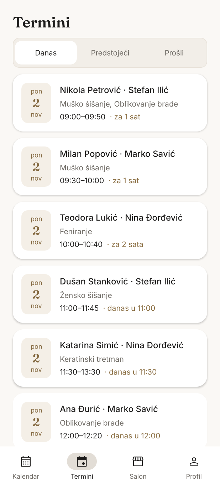
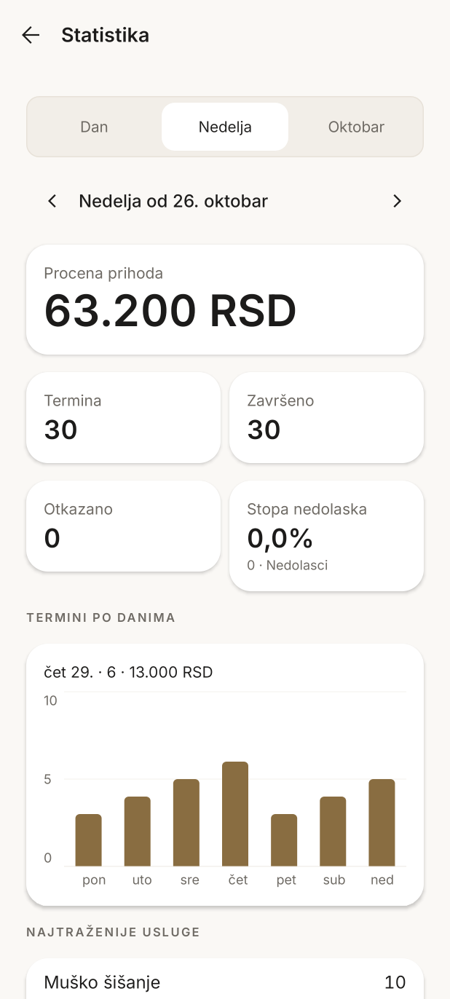
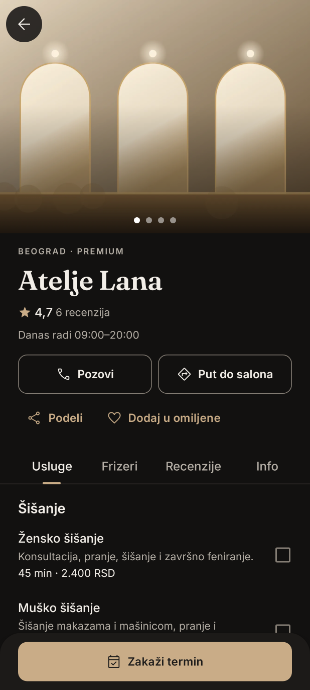

Frizerski saloni u Srbiji
Tvoj salon, na dodir
Pronađi frizera u blizini, pogledaj radove i cene i zakaži termin za par dodira. Bez poziva i bez čekanja na odgovor.
Preuzmi sa Google PlayZa Android 8 i novije.

Frizerski saloni u Srbiji
Pronađi frizera u blizini, pogledaj radove i cene i zakaži termin za par dodira. Bez poziva i bez čekanja na odgovor.
Preuzmi sa Google PlayZa Android 8 i novije.

Za klijente
Izaberi usluge, frizera ili „bilo koji slobodan“, pa dan i vreme. Termin se drži za tebe dok potvrđuješ, a podsetnik stiže dan ranije i dva sata pre.

Fotografije, cene, radno vreme, recenzije i put do salona.

Ili „bilo koji slobodan“ za najraniji termin.

Samo stvarno slobodni termini, bez preklapanja.

Dodaj u kalendar, a otkaži ili pomeri u roku koji salon dozvoljava.
Za salone
Vlasnik vidi raspored celog tima, frizer svoj. Termini iz aplikacije, telefona i dolasci bez najave na istom mestu.

Dan ili nedelja, po frizerima; dodir na prazno mesto pravi termin.

Označi završen termin ili nedolazak, pomeri ili otkaži uz obaveštenje klijentu.

Prihod, broj termina, nedolasci, najtraženije usluge i frizeri.
Dva klijenta ne mogu da uzmu isto vreme; drugi odmah dobija nove slobodne termine.
Godišnji odmor, pauza ili obuka: slobodni termini nestaju istog trenutka.
Povezivanje sa Google Calendar-om, Calendly-jem i Cal.com-om.
Aplikacija prati temu telefona, radi sa uvećanim slovima i sa čitačem ekrana TalkBack.
